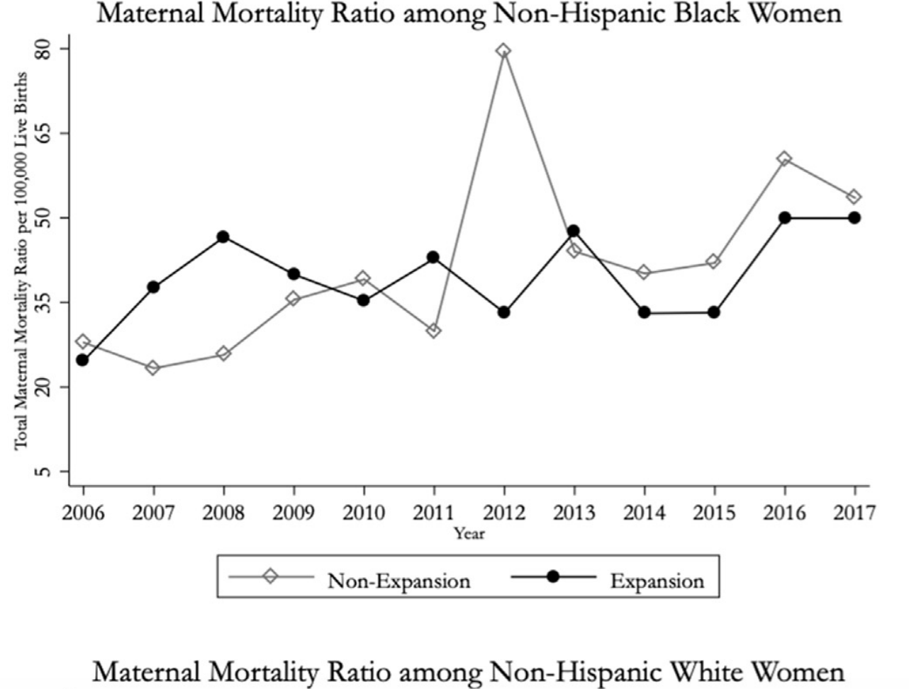

Structural access and dignified, equitable treatment for all.
Achieving equitable and dignified healthcare outcomes for low-income Black women demands targeted policy reform that addresses not only access to coverage but the discriminatory conditions that persist within the system itself.
Federal mandated Medicaid expansion in all remaining non-expansion states would directly address the coverage gap that leaves low-income Black women without consistent access to care. In 2017, Medicaid was responsible for financing 43% of all births in the United States. Despite this, medical services and income eligibility for pregnancy-related Medicaid coverage varies by state — leaving many low-income Black women without coverage before, during, and after pregnancy.
Research shows that women uninsured before pregnancy have
a higher prevalence of preconception health risk factors as
well as a lower prevalence of health-promoting indicators —
factors associated with worse childbirth outcomes. Medicaid
expansion has been shown to result in improved preconception
coverage, improvements in preconception health, and a
significant reduction in infant mortality rates.
(Eliason, 2020)
While research indicates that Medicaid expansion is associated with lower maternal mortality rates, insurance coverage alone does not fully account for the racial disparities Black women face. Other critical factors — including implicit bias among healthcare providers, residential segregation, chronic stress, and systemic racism — continue to affect maternal outcomes regardless of coverage status. This is why Medicaid expansion must be paired with mandatory implicit bias training. Coverage gets Black women in the door. Dignified, unbiased treatment ensures they survive.

Maternal Mortality Ratio among Non-Hispanic Black Women by Medicaid Expansion Status (2006–2017). Expansion states consistently show lower maternal mortality rates compared to non-expansion states. (Eliason, 2020)
The Department of Health and Human Services should mandate comprehensive implicit bias and racial history training for all licensed healthcare workers as a condition of Medicaid and Medicare reimbursement. Expanding implicit bias training and education in clinical settings is critical to promote awareness of how bias affects care and puts Black women's lives at risk.
In many ways, racism is embedded in medical education and
practice. Racialized constructions of pain tolerance, for example,
affect how, when, and whether pain is treated in Black patients —
with direct implications in maternal care. Far too often, these
perceptions influence how soon Black women receive needed care.
Dispelling them and educating providers on how they affect care
is crucial.
(Omeish & Kiernan, 2020)
Tying implicit bias training to Medicaid and Medicare reimbursement creates a financial incentive for compliance — making it one of the most powerful levers available to drive systemic change across the entire healthcare system. Without addressing the discriminatory treatment Black women face inside the system, expanded coverage alone will not be enough to close the gap in maternal mortality.
Medicaid expansion alone is insufficient because it does not address what happens to Black women once they enter the healthcare system. Implicit bias training alone is insufficient because Black women cannot benefit from unbiased care if they cannot access care in the first place. Only together do these policies address both the structural and interpersonal barriers Black women face.
Understanding the barriers Black women face requires an acknowledgment of intersectionality — the compounding effect of race, gender, and socioeconomic status on their lived experiences. While many may never walk a day in their shoes, it is critical to acknowledge the unique challenges they face and commit to systemic change that reflects that understanding. Advocacy begins with awareness, and awareness demands action.
Together these recommendations reflect a commitment to healthcare not merely as a policy provision but as a fundamental human right — one that demands both structural access and dignified, equitable treatment for low-income Black women.
These are not radical demands. They are the minimum standard of dignity that every woman in America deserves.
Want to support these policy changes? Here is what you can do:
Eliason, E. L. (2020). Adoption of Medicaid expansion is associated with lower maternal mortality. Women's Health Issues, 30(3), 147–152. https://doi.org/10.1016/j.whi.2020.01.005
Omeish, Y., & Kiernan, S. (2020). Targeting bias to improve maternal care and outcomes for Black women in the USA. EClinicalMedicine, 27, 100568. https://doi.org/10.1016/j.eclinm.2020.100568